Журнал
Настоящие данные; будущая пустая отметка не подменяется отсутствием.
WEB-TEACHER-JOURNAL__corrected-marks__dark__1440__341710643
dark · 1440px · revision 3417106437bdd82060dd834952a6d39f6a637467
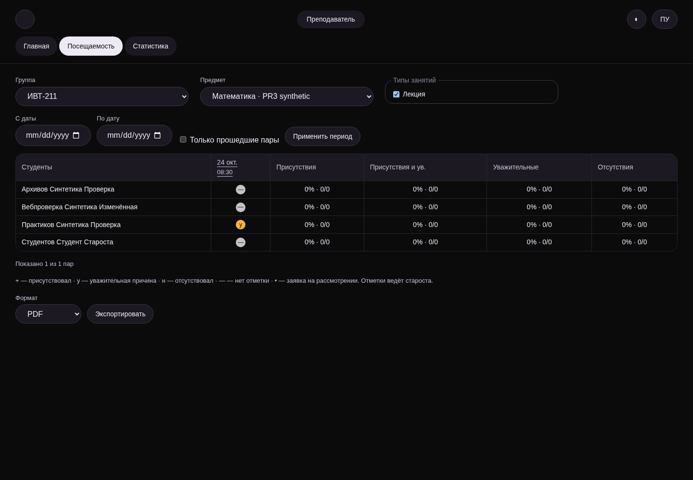
14 визуальных samples,8 принятых действий. Синтетический изолированный стенд. Каждый PNG хранит точную revision; исходные кадры не изменялись. Промежуточная поставка.
Manifest: состояния, revisions, backend, SHA256 · HTML/PNG комплект
Настоящие данные; будущая пустая отметка не подменяется отсутствием.
WEB-TEACHER-JOURNAL__corrected-marks__dark__1440__341710643
dark · 1440px · revision 3417106437bdd82060dd834952a6d39f6a637467

Настоящие данные; будущая пустая отметка не подменяется отсутствием.
WEB-TEACHER-JOURNAL__corrected-marks__dark__300__341710643
dark · 300px · revision 3417106437bdd82060dd834952a6d39f6a637467
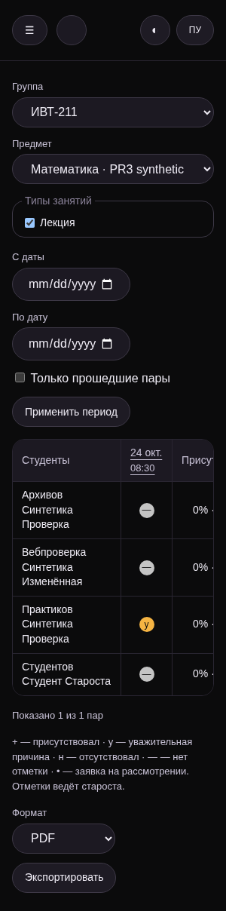
Настоящие данные; будущая пустая отметка не подменяется отсутствием.
WEB-TEACHER-JOURNAL__corrected-marks__light__1440__341710643
light · 1440px · revision 3417106437bdd82060dd834952a6d39f6a637467
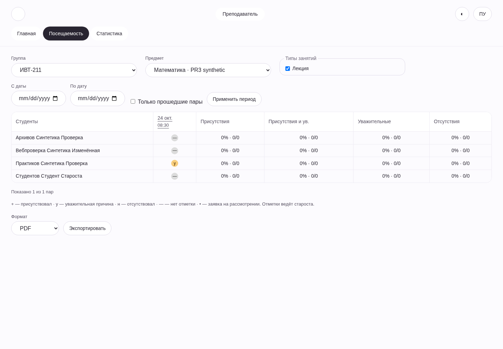
Настоящие данные; будущая пустая отметка не подменяется отсутствием.
WEB-TEACHER-JOURNAL__corrected-marks__light__300__341710643
light · 300px · revision 3417106437bdd82060dd834952a6d39f6a637467
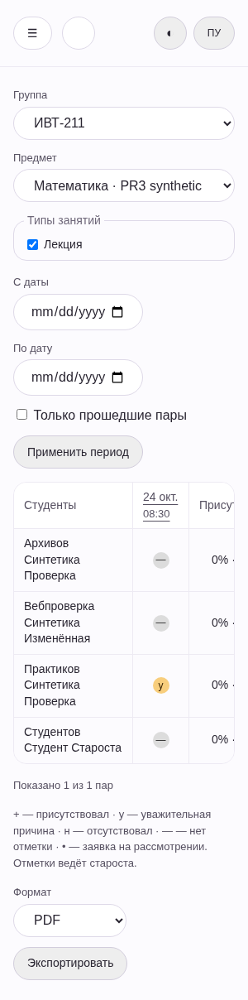
Настоящие данные; будущая пустая отметка не подменяется отсутствием.
WEB-TEACHER-LESSON__corrected-marks__dark__1440__341710643
dark · 1440px · revision 3417106437bdd82060dd834952a6d39f6a637467
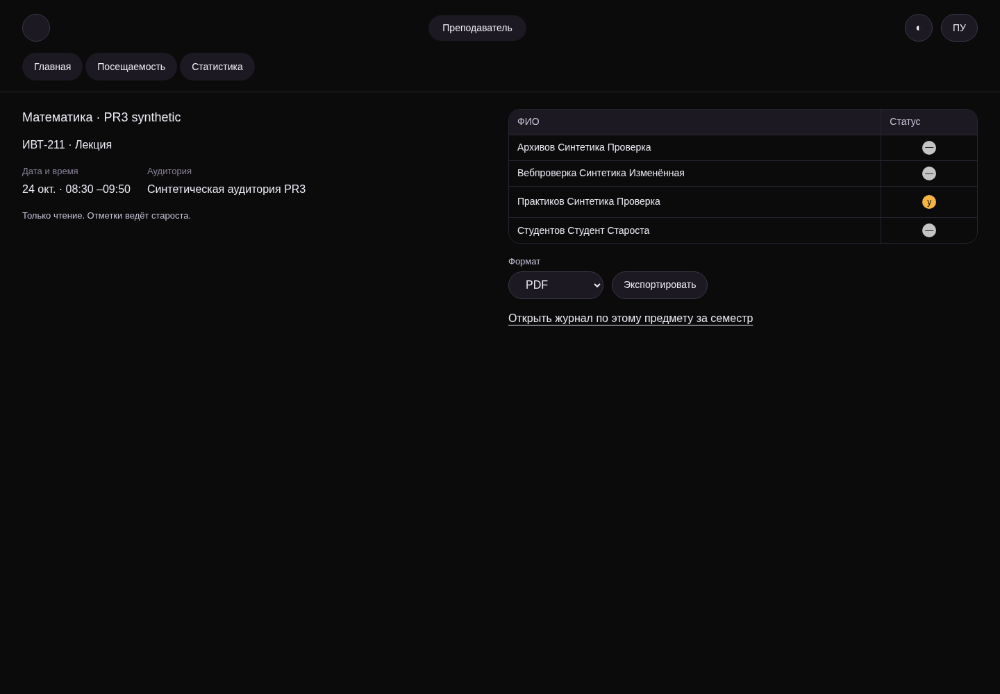
Настоящие данные; будущая пустая отметка не подменяется отсутствием.
WEB-TEACHER-LESSON__corrected-marks__dark__300__341710643
dark · 300px · revision 3417106437bdd82060dd834952a6d39f6a637467
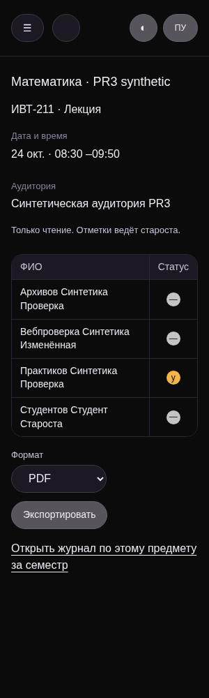
Настоящие данные; будущая пустая отметка не подменяется отсутствием.
WEB-TEACHER-LESSON__corrected-marks__light__1440__341710643
light · 1440px · revision 3417106437bdd82060dd834952a6d39f6a637467
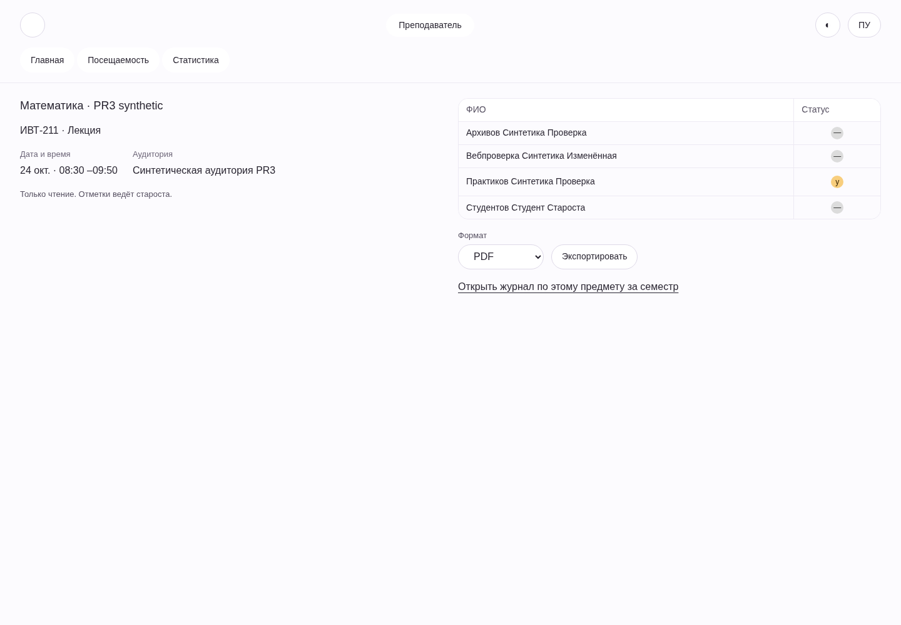
Настоящие данные; будущая пустая отметка не подменяется отсутствием.
WEB-TEACHER-LESSON__corrected-marks__light__300__341710643
light · 300px · revision 3417106437bdd82060dd834952a6d39f6a637467
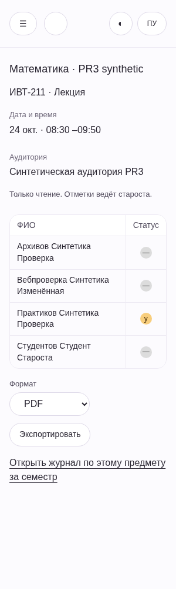
Автоподгрузка реальных41пар; историческое имя файла31 сохранено.
WEB-TEACHER-JOURNAL__all-pages-loaded__light__1440__210c98202
light · 1440px · revision 210c98202a9b967b2202f523520244569e6b8ce3
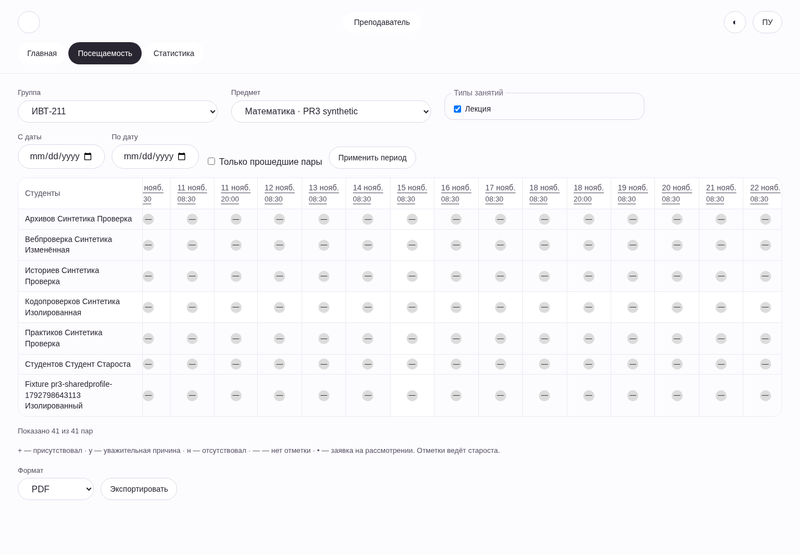
Видимые реальные даты подачи и решения.
WEB-TEACHER-EXCUSE__created-and-decided-dates__light__1440__210c98202
light · 1440px · revision 210c98202a9b967b2202f523520244569e6b8ce3
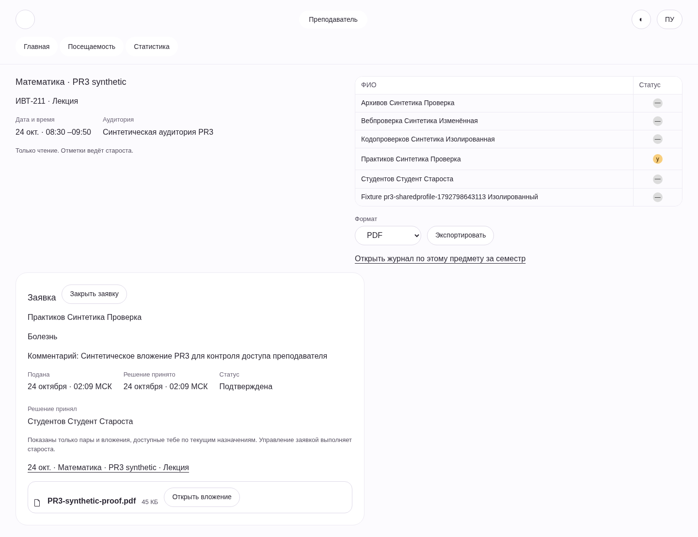
Ненулевой знаменатель и серверный числовой отбор.
WEB-TEACHER-STATS__populated-range__light__1440__210c98202
light · 1440px · revision 210c98202a9b967b2202f523520244569e6b8ce3
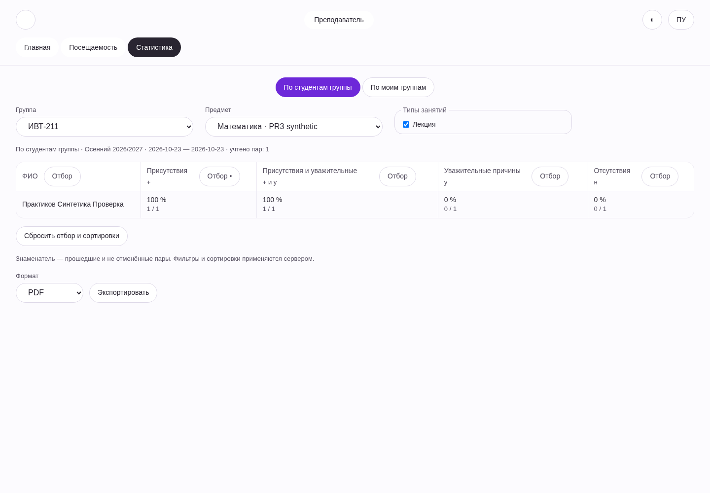
Открытая заявка, даты и вложение на узком экране.
WEB-TEACHER-EXCUSE__created-and-decided-dates-root20__light__300__210c98202
light · 300px · revision 210c98202a9b967b2202f523520244569e6b8ce3
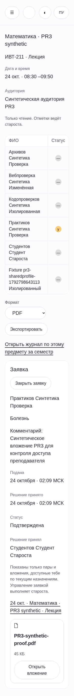
Заголовок, фильтры, запрос и строки соответствуют выбранной группеA.
WEB-TEACHER-STATS__drill-B-select-A__light__1440__8401bd1b9
light · 1440px · revision 8401bd1b92045f199c48312cff80da10a84826b1
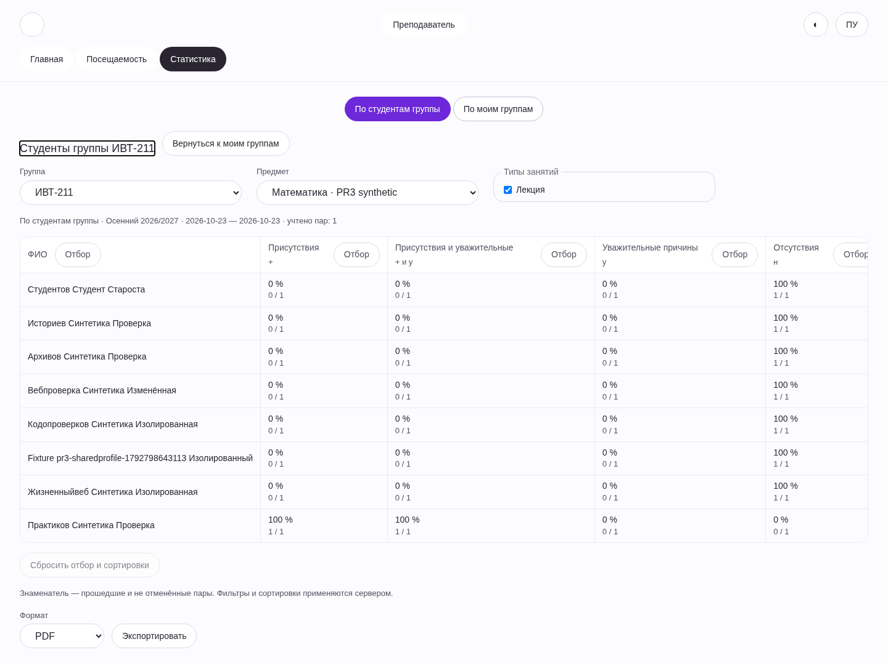
Исходная группа и фокус сохранены.
WEB-TEACHER-STATS__return-origin-B__light__1440__8401bd1b9
light · 1440px · revision 8401bd1b92045f199c48312cff80da10a84826b1
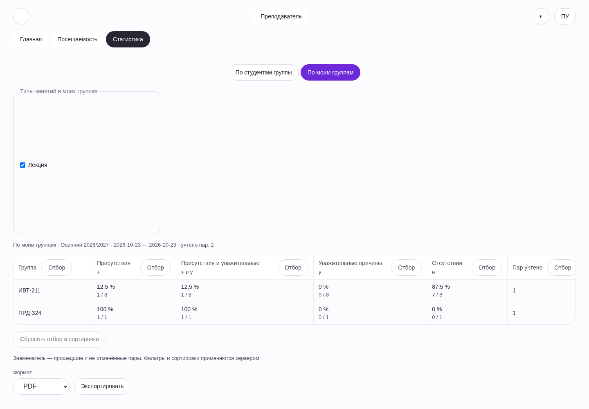